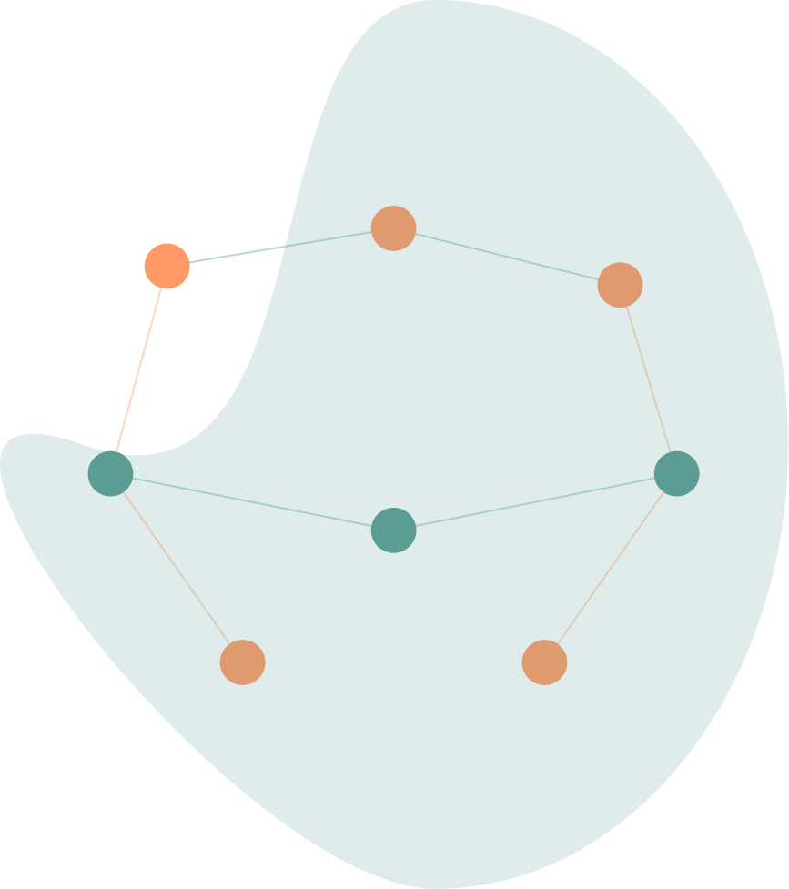

✨ Smart prep for residents
 Instagram
Instagram
Instagram
Your study time,
optimized.

AI learns how you learn. Personalized question banks. Trusted explanations. Built by the surgeon who's been in your shoes.
500+
exam questions
AI-powered
adaptive learning
Increase
your exam scores